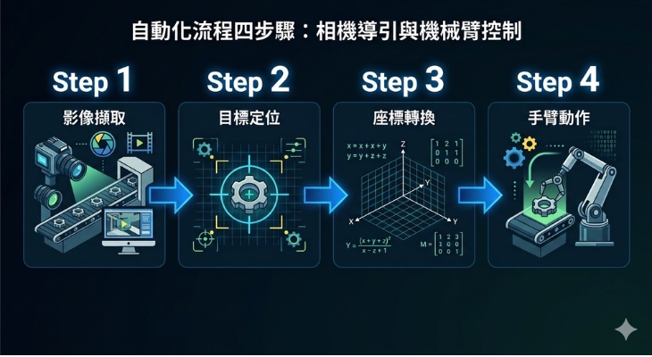
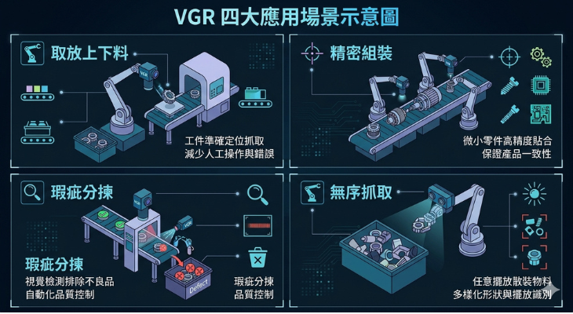

製造現場的機械手臂越來越常見，但多數手臂只是「照固定路徑重複動作」——物件位置一偏、角度一歪，它就抓不準。視覺引導機械手臂（VGR, Vision Guided Robotics）解決的，正是這個問題：讓機器人先「看到」目標，再決定怎麼動。
什麼是 VGR
VGR 的核心概念很直觀：在機械手臂的工作流程中加入機器視覺系統，讓手臂根據「看到的」即時影像來調整動作，而非只依賴預設的固定座標。
簡單說：沒有 VGR 的手臂是盲的，有 VGR 的手臂是長了眼睛的。
這讓手臂能應付工件位置不固定、角度有偏差、甚至種類混雜的真實產線環境——而這些，恰好是固定路徑手臂最頭痛的場景。
VGR 怎麼運作
一套 VGR 系統的典型流程分四步：
- 影像擷取：相機拍攝工作區域的影像。相機位置有兩種常見配置——裝在手臂上（Eye-in-Hand）或固定在手臂外部俯瞰工作區（Eye-to-Hand）。
- 目標定位：視覺軟體辨識影像中的目標物件，算出它的位置（X、Y）、角度（θ），甚至深度（Z）。
- 座標轉換：把「相機看到的像素座標」換算成「機械手臂的實體座標」。這一步叫做手眼校正（Hand-Eye Calibration），是 VGR 精度的關鍵。
- 手臂動作：手臂根據換算後的座標移動到正確位置，執行取放、組裝或其他動作。

整個流程在毫秒到秒級內完成，能跟上產線節拍。
Eye-in-Hand vs Eye-to-Hand
兩種相機配置各有適用場景：
| 配置 | 相機位置 | 優點 | 適用場景 |
|---|---|---|---|
| Eye-in-Hand | 裝在手臂末端 | 視野跟著手臂走，適合近距離精準定位 | 精密組裝、小範圍高精度作業 |
| Eye-to-Hand | 固定在手臂外部（俯瞰） | 不受手臂動作影響，視野穩定、範圍大 | 取放上下料、輸送帶抓取 |
實務上也有混合使用的案例：先用外部相機粗定位，再用手臂上的相機精定位，兼顧速度與精度。
哪些場景適合 VGR
VGR 不是什麼都適合，它的價值在「工件位置不固定或有變異」的場景：
- 取放上下料：工件從輸送帶或料盤來，位置每次不同，手臂需要視覺來「找到」目標再抓取。
- 精密組裝：零件公差小，靠機構定位不夠準，需要視覺做最後的微米級校正。
- 瑕疵分揀：視覺先檢測、判定好壞，再引導手臂把不良品挑出來。
- 無序抓取（Bin Picking）：工件散落在料箱裡，位置、角度、堆疊方式都隨機，這是 VGR 最有挑戰性也最有價值的應用。

導入 VGR 的關鍵考量
想導入 VGR，有幾個務實的問題要先釐清：
- 精度需求：你的製程需要多準？Sub-pixel 級的對位精度，還是毫米級就夠？這決定相機、鏡頭與演算法的選擇。
- 速度需求：節拍時間多少？影像處理加上手臂動作的總時間要能跟上。
- 環境條件：光源穩不穩定、背景是否複雜、工件表面是否反光——這些都影響視覺辨識的難度。
- 手眼校正：這是 VGR 成功的基礎。校正不準，後面再好的演算法都白搭。需要專業的校正流程與工具。
- 整合能力：視覺系統要能與機械手臂的控制器（通常透過 TCP/IP、EtherNet/IP 或其他工業通訊協定）即時溝通。
很多 VGR 專案失敗不是因為技術不夠，而是在需求評估階段就沒搞清楚精度、速度與環境條件的平衡點。
2D 就夠，還是需要 3D？
多數 VGR 應用用 2D 視覺就能搞定——工件在平面上，只需要 X、Y、θ 就能引導手臂。但以下幾種情況需要 3D 視覺的加入：
- 工件有高度差（不在同一平面）
- 無序抓取（Bin Picking），需要判斷最上層且可抓取的物件
- 需要量測工件的立體外形再決定抓取姿態
3D 視覺的成本與複雜度較高，但在對的場景下帶來的價值是 2D 無法替代的。
炘智科技的角色
視覺對位是炘智科技最核心的技術能力之一。VGR 正是視覺對位技術的延伸——從「讓製程對準」到「讓手臂對準」，底層的影像對位演算法、手眼校正、與機台的通訊整合，都是我們每天在做的事。
不管你是想為現有的機械手臂加上視覺引導，還是從零規劃一套 VGR 系統，從需求評估、演算法開發、手眼校正到與手臂控制器的整合，我們都能全程處理。
歡迎與我們聯絡，一起評估你的產線是否適合導入 VGR，以及該怎麼切入。